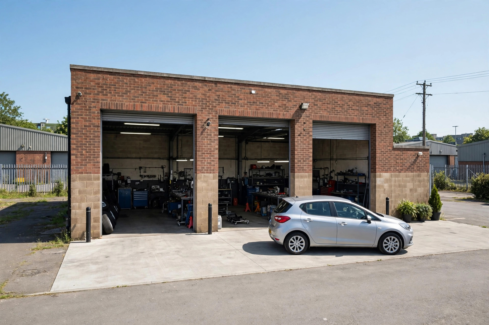
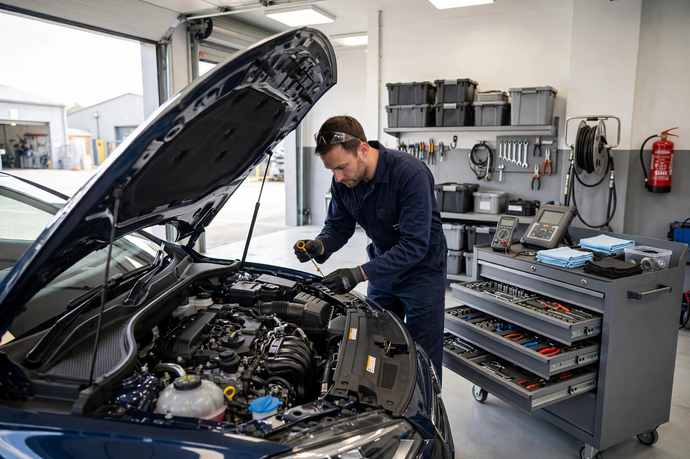
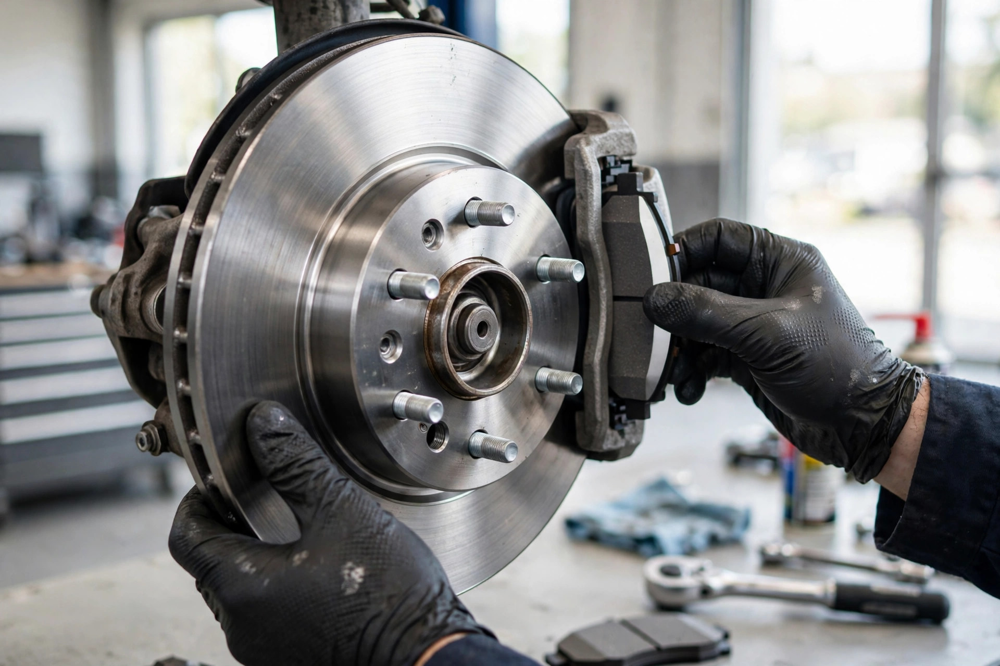

MOT Testing
Annual MOTs for cars and Class 7 vehicles — thorough, honest, and explained in plain English.

Whitefield, Manchester · Family-run MOT & service centre · Rated 5.0 on Google
Run by two brothers with a lifetime in the motor trade — honest servicing, fair prices and MOT testing for cars and vans, right here in Whitefield.
What we do
Annual MOTs for cars and Class 7 vehicles — thorough, honest, and explained in plain English.
Interim and full services that keep your vehicle reliable and its service history healthy.
Warning light on? We find the real fault with proper diagnostic equipment — no guesswork.
Pads, discs and full brake inspections — the safety-critical stuff, done properly.
Clutch replacement and adjustment by mechanics who have done thousands of them.
Exhaust repairs and replacements — quiet running and emissions sorted.
All makes and models
Cars and light vans — we look after them all, whatever the badge on the bonnet.
Why choose us
We're a small, family-run garage: you get a friendly welcome, honest advice and work done at a fair price — from mechanics who genuinely love cars.
The workshop in action


Word on the street
Good to know
Yes — give us a call on 0161 796 5717 and we'll get you booked in at a time that suits you.
Yes. We carry out MOTs on cars (Class 4) and larger vehicles up to Class 7, including vans.
Yes — cars and light vans of all makes, serviced to the standard your warranty requires.
We're on Moss Lane Industrial Estate, Egremont Close, Whitefield, Manchester M45 8FH — just off the A56, a few minutes from the M60.
Get in touch